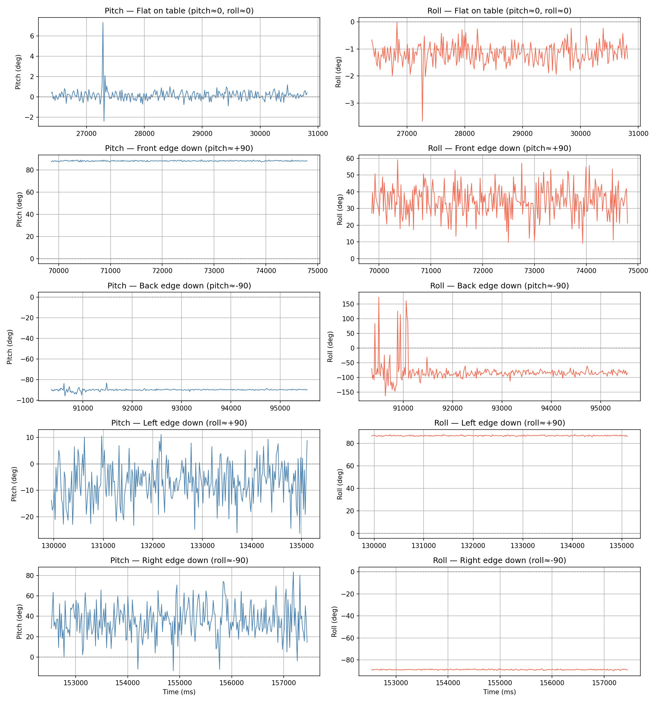
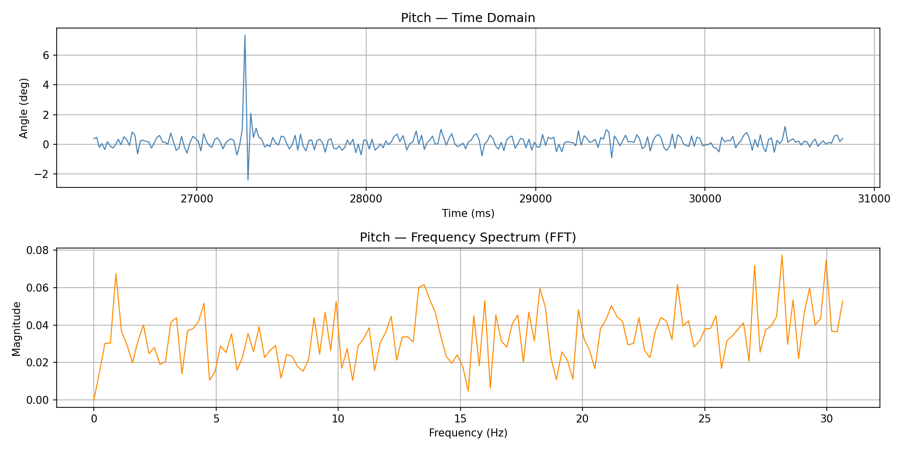
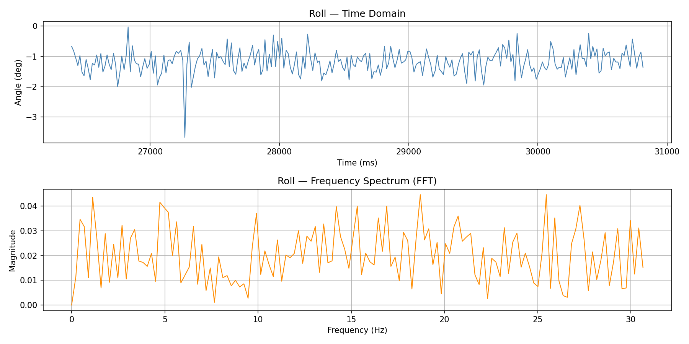
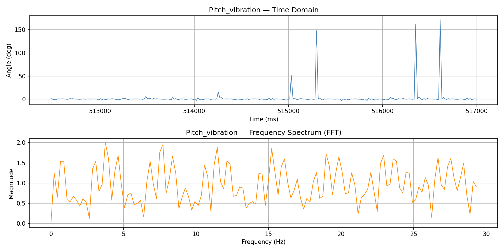
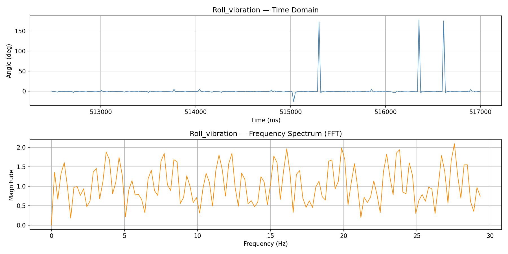
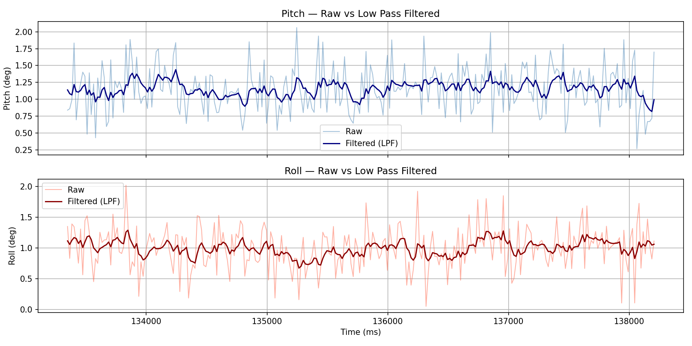
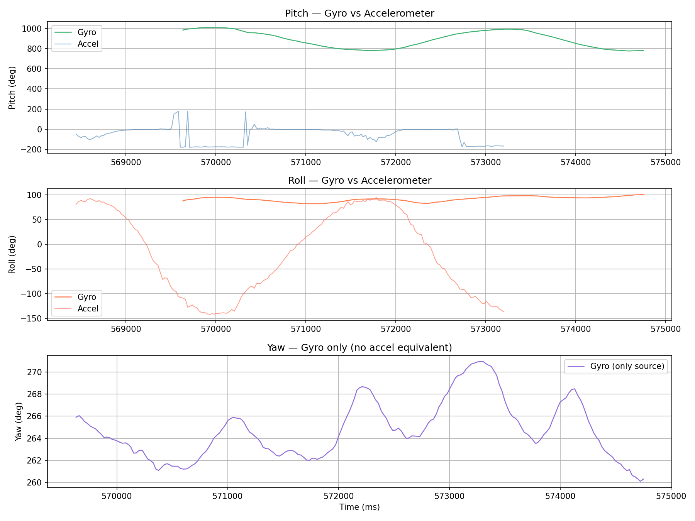
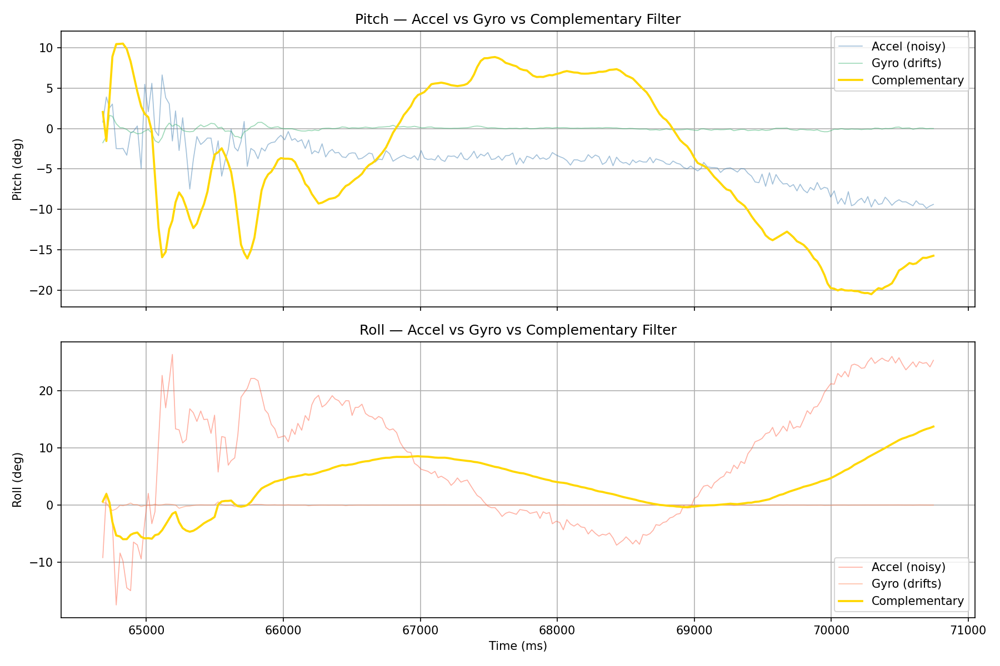

Set Up the IMU
Artemis IMU Connections
The ICM-20948 IMU was connected to the Artemis board via QWIIC connector (I2C). The SparkFun 9DOF IMU Breakout – ICM 20948 Arduino library was installed through the Arduino Library Manager.

Example Code Verification
Example1_Basics was uploaded to verify IMU initialization and AGMT data streaming over I2C.
A 3-blink LED startup indicator was added — useful when running on battery without serial access.
for (int i = 0; i < 3; i++) {
digitalWrite(LED_BUILTIN, HIGH); delay(500);
digitalWrite(LED_BUILTIN, LOW); delay(500);
}AD0_VAL
AD0_VAL sets the LSB of the IMU's I2C address:
| AD0_VAL | I2C Address | Condition |
|---|---|---|
1 | 0x69 | ADR jumper not bridged — SparkFun default ✓ |
0 | 0x68 | ADR jumper bridged (also disables SPI on SparkFun breakout) |
The SparkFun breakout leaves the ADR jumper open by default, so AD0_VAL = 1 is correct. Setting it to 0 caused a Data Underflow error on initialization — confirmed via Serial Monitor.
myICM.begin(Wire, 1); // AD0_VAL = 1 → address 0x69Acceleration & Gyroscope Data
| Motion | Accelerometer | Gyroscope |
|---|---|---|
| Flat on table | az ≈ +1000 mg, ax/ay ≈ 0 | All axes ≈ 0 dps |
| Rotated 90° onto side | Gravity shifts to now-downward axis | Spike on rotation axis during motion, returns to 0 |
| Flipped upside down | az ≈ −1000 mg | Spike during flip, 0 when stationary |
| Shaken/accelerated | Dynamic changes + noise on all axes | Angular velocity spikes on all axes |
The accelerometer measures the projection of the gravity vector onto each axis — giving absolute orientation but with noise. The gyroscope gives smooth angular velocity but integrating it introduces drift. This motivates the complementary filter.


Accelerometer
Pitch & Roll from Accelerometer
When the IMU is tilted, gravity projects onto the X, Y, Z axes. Using trigonometry:
roll = atan2(ay, az) × (180 / π)
// ax, ay, az in g's — divide raw mg output by 1000
Signs are negated to match the physical orientation of the SparkFun breakout:
#include <math.h>
float pitch_lpf = 0.0, roll_lpf = 0.0;
bool getAngles(float &pitch, float &roll, float &pitch_f, float &roll_f) {
if (myICM.dataReady()) {
myICM.getAGMT();
float ax = myICM.accX() / 1000.0;
float ay = myICM.accY() / 1000.0;
float az = myICM.accZ() / 1000.0;
pitch = -atan2(ax, az) * 180.0 / M_PI;
roll = -atan2(ay, az) * 180.0 / M_PI;
pitch_lpf = 0.2 * pitch + 0.8 * pitch_lpf;
roll_lpf = 0.2 * roll + 0.8 * roll_lpf;
pitch_f = pitch_lpf;
roll_f = roll_lpf;
return true;
}
return false;
}Data was streamed over BLE and plotted across 5 orientations using the table surface and edges as 90° guides:

Accuracy
Mean pitch/roll computed over each capture window. Only the relevant axis is reported — when pitch approaches ±90°, az → 0 and roll becomes geometrically undefined (gimbal lock).
| Orientation | Expected | Relevant Axis | Measured | Error |
|---|---|---|---|---|
| Flat on table | pitch=0°, roll=0° | Both | pitch=0.17°, roll=−1.18° | <1.2° |
| Front edge down | pitch=+90° | Pitch | +88.10° | −1.90° |
| Back edge down | pitch=−90° | Pitch | −89.88° | +0.12° |
| Left edge down | roll=+90° | Roll | +86.87° | −3.13° |
| Right edge down | roll=−90° | Roll | −88.86° | +1.14° |
atan2(ay, az) numerically unstable — roll becomes meaningless. This is a fundamental Euler angle limitation, not a sensor defect.Noise & Frequency Analysis
Two datasets collected: board stationary (baseline) and table struck gently (induced vibration). FFT computed at ~61 Hz sampling rate:
def plot_fft(timestamps, signal, label="Pitch"):
ts = np.array(timestamps)
sig = np.array(signal)
dt = np.mean(np.diff(ts)) / 1000.0 # ms → s
fs = 1.0 / dt # sampling freq Hz
fft_vals = np.fft.rfft(sig - np.mean(sig)) # remove DC offset
fft_mag = np.abs(fft_vals) / len(sig)
freqs = np.fft.rfftfreq(len(sig), d=dt)
# plot time domain and frequency domain...Baseline noise (stationary board):


Vibration data (table strikes):


Low Pass Filter
A first-order IIR low pass filter was implemented on the Artemis:
// α derived from cutoff frequency and sampling rate:
α = T / (T + RC)
T = 1 / rate // sampling period (s)
RC = 1 / (2π · fc) // time constant from cutoff frequency
// At f_s = 61.3 Hz, f_c = 5 Hz:
T = 1/61.3 ≈ 0.0163 s
RC = 1/(2π×5) ≈ 0.0318 s
α = 0.0163 / (0.0163 + 0.0318) ≈ 0.34
// α = 0.2 used — slightly more aggressive smoothing than theoretical
const float alpha = 0.2;
// Inside getAngles():
pitch_lpf = alpha * pitch + (1 - alpha) * pitch_lpf;
roll_lpf = alpha * roll + (1 - alpha) * roll_lpf;
Gyroscope
Pitch, Roll & Yaw
The gyroscope measures angular velocity (deg/s). Angles are obtained by integrating over time:
roll_g += ωy · dt
yaw_g += ωz · dt
// dt from micros() delta between samples
float pitch_g = 0.0, roll_g = 0.0, yaw_g = 0.0;
unsigned long last_time_g = 0;
void updateGyro() {
unsigned long now = micros();
float dt = (now - last_time_g) / 1000000.0;
last_time_g = now;
if (myICM.dataReady()) {
myICM.getAGMT();
pitch_g += myICM.gyrX() * dt;
roll_g += myICM.gyrY() * dt;
yaw_g += myICM.gyrZ() * dt;
}
}
atan2 constrains the accelerometer to ±180°. The gyro is smooth but accumulates drift — visible in the yaw plot creeping even when stationary. The accelerometer is bounded and drift-free but noisy, and cannot measure yaw at all (gravity has no yaw component).Complementary Filter
Fuses both sensors — gyroscope for short-term smoothness, accelerometer for long-term drift correction:
// α → 1: trust gyro (smooth, slight drift)
// α → 0: trust accel (noisy, no drift)
// α = 0.98: standard starting point
float pitch_c = 0.0, roll_c = 0.0;
unsigned long last_time_c = 0;
void updateComplementary(float pitch_a, float roll_a) {
unsigned long now = micros();
float dt = (now - last_time_c) / 1000000.0;
last_time_c = now;
pitch_c = 0.98 * (pitch_c + myICM.gyrX() * dt) + 0.02 * pitch_a;
roll_c = 0.98 * (roll_c + myICM.gyrY() * dt) + 0.02 * roll_a;
}
// Reset on every new BLE connection to prevent drift accumulation:
pitch_g = 0.0; roll_g = 0.0; yaw_g = 0.0;
pitch_c = 0.0; roll_c = 0.0;
last_time_g = micros(); last_time_c = micros();
Sample Data
Speed of Sampling
To measure loop speed, all Serial.print statements were commented out and all delay() calls removed. A loop counter and timestamp were used to compute the effective sampling rate:
// Measure loop rate: count iterations over 1 second
unsigned long start = millis();
int loop_count = 0;
while (millis() - start < 1000) {
float p, r, pf, rf;
if (getAngles(p, r, pf, rf)) {
loop_count++;
}
}
Serial.print("IMU samples per second: ");
Serial.println(loop_count);dataReady() check ensures we only store a sample when the IMU has fresh data, so the effective storage rate matches the IMU output rate rather than the loop rate. No samples are missed and no duplicates are stored.millis() returns whole milliseconds and use half the memory of floats. At 300 samples with 9 floats and 1 integer per sample, total memory usage is approximately 300 x (9 x 4 + 4) = 12 KB, well within the Artemis 384 KB RAM.Timestamped IMU Data in Arrays
Separate arrays are used for accelerometer, gyroscope, and complementary filter data. This avoids packing everything into one large struct and makes it easy to send only the data needed per command. All arrays share the same timestamp array since they are collected in lockstep.
#define IMU_ARRAY_SIZE 300
int imu_time[IMU_ARRAY_SIZE];
float imu_pitch[IMU_ARRAY_SIZE], imu_roll[IMU_ARRAY_SIZE];
float imu_pitch_f[IMU_ARRAY_SIZE], imu_roll_f[IMU_ARRAY_SIZE];
float imu_pitch_g[IMU_ARRAY_SIZE], imu_roll_g[IMU_ARRAY_SIZE], imu_yaw_g[IMU_ARRAY_SIZE];
float imu_pitch_c[IMU_ARRAY_SIZE], imu_roll_c[IMU_ARRAY_SIZE];
int imu_index = 0;
// Non-blocking collection in loop():
float p, r, pf, rf;
if (getAngles(p, r, pf, rf)) {
updateGyro();
updateComplementary(p, r);
int idx = imu_index % IMU_ARRAY_SIZE;
imu_time[idx] = (int)millis();
imu_pitch[idx] = p; imu_roll[idx] = r;
imu_pitch_f[idx] = pf; imu_roll_f[idx] = rf;
imu_pitch_g[idx] = pitch_g; imu_roll_g[idx] = roll_g; imu_yaw_g[idx] = yaw_g;
imu_pitch_c[idx] = pitch_c; imu_roll_c[idx] = roll_c;
imu_index++;
}5s of IMU Data over Bluetooth
At 61 Hz, 300 samples covers approximately 5 seconds of data. The circular buffer always holds the most recent 300 samples. On command, the Artemis streams all 300 entries in chronological order over BLE:
// GET_IMU_DATA sends all fields per sample in one string:
// Format: T:xxx|P:x.xx|R:x.xx|PG:x.xx|RG:x.xx|YG:x.xx|PC:x.xx|RC:x.xx
case GET_IMU_DATA:
{
int current_pos = imu_index % IMU_ARRAY_SIZE;
for (int i = current_pos; i < IMU_ARRAY_SIZE; i++) { /* send old half */ }
for (int i = 0; i < current_pos; i++) { /* send new half */ }
break;
}def handler_imu(uuid, bytearray):
s = bytearray.decode('utf-8')
t = int(float(s[s.find("T:")+2 : s.find("|P:")]))
p = float(s[s.find("|P:")+3 : s.find("|R:")])
r = float(s[s.find("|R:")+3 : s.find("|PG:")])
pg = float(s[s.find("|PG:")+4 : s.find("|RG:")])
rg = float(s[s.find("|RG:")+4 : s.find("|YG:")])
yg = float(s[s.find("|YG:")+4 : s.find("|PC:")])
pc = float(s[s.find("|PC:")+4 : s.find("|RC:")])
rc = float(s[s.find("|RC:")+4 :])
imu_timestamps.append(t)
imu_pitch.append(p); imu_roll.append(r)
imu_pitch_g.append(pg); imu_roll_g.append(rg); imu_yaw_g.append(yg)
imu_pitch_c.append(pc); imu_roll_c.append(rc)
ble.connect()
ble.start_notify(ble.uuid['RX_STRING'], handler_imu)
time.sleep(3)
ble.send_command(CMD.GET_IMU_DATA, "")
time.sleep(8)
ble.stop_notify(ble.uuid['RX_STRING'])
print(f"Received {len(imu_timestamps)} samples spanning "
f"{(imu_timestamps[-1] - imu_timestamps[0]) / 1000:.1f}s")Record a Stunt
The RC car was driven to observe its handling and dynamics before attaching the IMU for future labs. The car is fast, lightweight, and tends to flip on sharp turns at high speed. Turning radius is tight and it responds quickly to input.
Acknowledgements
Claude AI was used throughout this lab for assistance with intuition building, debugging, and HTML writeup generation. Specifically, Claude was used to help explain sensor fusion concepts, diagnose sensor drifting and allignment issues, and structure the lab report.